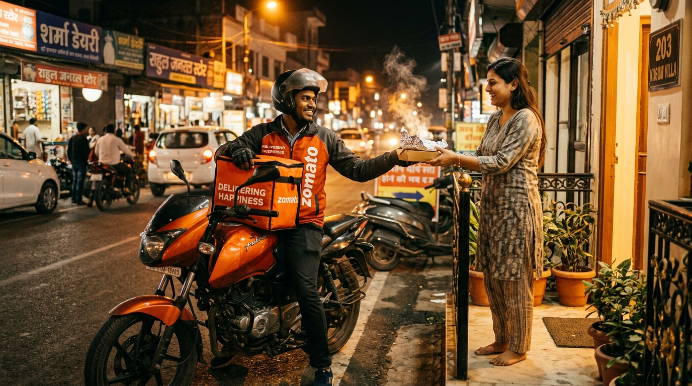

Founder Profile
Founder Profile
Who Is Karan Kumar? The 21-Year-Old Founder Behind Streat Eats Haldwani
At just 21, Karan Kumar built a food tech startup reshaping how Haldwani orders street food with zero markup. Read his full journey from late-night coding to a live app.
 Co-Founder Profile
Co-Founder Profile
Lokesh Paneru: The Ground Force Behind Streat Eats' 30-Minute Delivery Promise in Haldwani
Meet the 20-year-old operations mastermind managing vendor partnerships, rider logistics, and 30-minute delivery execution across Haldwani.
 Hyperlocal Tech
Hyperlocal Tech
How Streat Eats Is Changing Street Food Delivery in Haldwani, Uttarakhand
Zero price markup, 30-minute delivery, genuine stall prices, and 15+ verified street vendors. Discover the hyperlocal economic revolution in Haldwani.
 हिन्दी लेख • फूड टेक
हिन्दी लेख • फूड टेक
Streat Eats क्या है? हल्द्वानी की अपनी Street Food Delivery App
अगर आप हल्द्वानी में रहते हैं और घर बैठे असली स्टॉल की कीमत पर गरमा-गरम मोमोज, बर्गर या चाट मंगाना चाहते हैं, तो जानिए Streat Eats कैसे काम करता है।
Foodie Guide
Top 10 Street Foods You Must Try in Haldwani (2026 Ultimate Foodie Guide & Delivery)
From iconic Nagar Palika momos and Bhotia Parao tikkis to spicy wok chowmein — the definitive foodie guide to Haldwani's street delicacies.
प्रेरणादायक कहानी
कैसे Karan Kumar और Lokesh Paneru ने बनाई Haldwani की पहली Street Food Delivery App
दो दोस्त, एक शहर और एक बड़ा सपना — पढ़िए 21 और 20 साल के युवाओं की अनकही कहानी जिन्होंने अपने शहर के वेंडर्स के लिए बनाया Streat Eats।
 Foodie Guide
Foodie Guide
The Ultimate Guide to the Best Momos in Haldwani: Steamed, Fried, Tandoori & Kurkure (2026)
Steamed, fried, or kurkure — here is your ultimate guide to the tastiest, juiciest momos across Haldwani and how to get them delivered hot.
 Local Food Walk
Local Food Walk
Bhotia Parao Food Walk: Exploring Haldwani's Legendary Evening Street Food Hub
Step into the beating heart of Haldwani's evening food culture. Discover the legendary stalls of Bhotia Parao and how to order from them online.
Local Food Walk
Nagar Palika Chauraha: The Epicenter of Haldwani's Iconic Street Food & Fast Delivery
Nagar Palika Chauraha is where generations of Haldwani residents have gathered for momos and street snacks. Explore its rich food heritage.
Local Food Walk
Mukhani Chauraha & Kaladhungi Road Food Guide: Top Evening Stalls, Rolls & Chowmein
Mukhani and Kaladhungi Road are bursting with high-energy street food joints. Explore the best rolls, noodles, and quick bites in this bustling neighborhood.
 Local Food Walk
Local Food Walk
Tikonia Chauraha Street Food Guide: Best Quick Bites, Chaat & Evening Snacks in Haldwani
Tikonia Chauraha connects Haldwani to Nainital Road and the civil lines. Discover why its chaat and quick bites are loved by thousands daily.
Foodie Guide
Best Desi Street Burgers in Haldwani: Crispy Tawa Patties, Spicy Chutneys & 30-Min Delivery
Thick spiced aloo patties, toasted buns, shredded cabbage, and secret street sauces — explore the best burgers in Haldwani.
Foodie Guide
Authentic Aloo Tikki & Chaat in Haldwani: Exploring the Heritage of Street Flavors
Ghee-roasted tikkis, chilled curd, and tangy tamarind saunth — discover the best traditional chaat spots across Haldwani.
Student Guide
Budget Food Guide for College Students in Haldwani: Top Delicious Meals Under ₹100
Hostel life in Haldwani doesn't mean boring food. Discover hearty, pocket-friendly street food meals under ₹100 delivered in 30 minutes.

Night DeliveryLate Night Street Food Delivery in Haldwani: How to Satisfy Midnight Cravings via Streat Eats
Late-night cravings strike when everything is closed. Discover how Streat Eats keeps Haldwani's top street stalls accessible late into the evening.
Price Transparency
Streat Eats vs Other Food Apps: Why Zero Food Markup Makes All the Difference in Haldwani
See the price breakdown comparison between Streat Eats and national aggregators. Why pay 35% extra when you can get genuine stall prices?
Vendor Community
How Haldwani Street Vendors Are Boosting Daily Earnings with Streat Eats Digital Orders
Read how small family-run food carts in Haldwani are reaching hundreds of new customers every day without investing in expensive hardware.
Seasonal Guide
Monsoon Street Food in Haldwani: Top 7 Comfort Foods to Enjoy on Rainy Mountain Days
When mountain rains sweep through Haldwani, nothing beats hot momos and spicy tea. Discover the top rainy day street foods delivered in 30 mins.
हिन्दी फूड गाइड
हल्द्वानी के 10 सबसे मशहूर मोमोज स्टॉल्स और उनका असली स्वाद
वेज, पनीर, फ्राइड और कुरकुरे मोमोज — जानिए हल्द्वानी के सबसे लोकप्रिय 10 मोमोज स्टॉल्स और घर बैठे 30 मिनट में आर्डर करने का तरीका।
Engineering & Vision
Inside the Code: How 21-Year-Old Karan Kumar Built Streat Eats from Haldwani, Uttarakhand
Go behind the scenes of Streat Eats' codebase. Learn how Karan Kumar built a lightning-fast hyperlocal delivery platform single-handedly at age 21.
Operations Deep Dive
Behind the 30-Minute Speed: How Lokesh Paneru Mastered Hyperlocal Logistics in Haldwani
How does food arrive steaming hot in under 30 minutes in Haldwani? Meet Lokesh Paneru, the 20-year-old operations head managing the ground fleet.